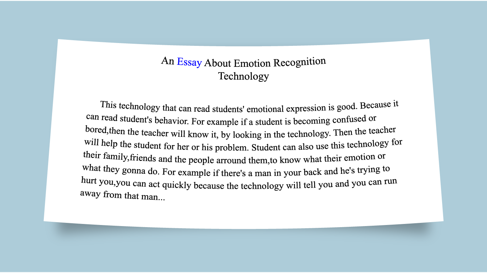
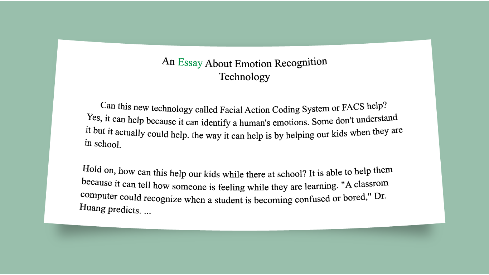
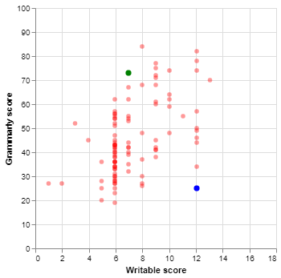
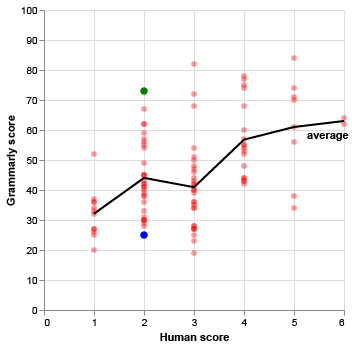
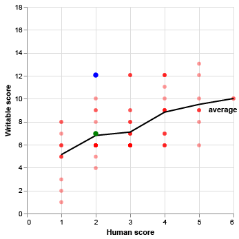

The excerpt below is from an essay written by a 10th grade student responding to a prompt that asked whether emotion detection technology would be valuable in schools.
The student's essay—and more than 2,000 others like it—were scored on a scale of 1 to 6 by two expert human graders. Any disagreements between the two scores were adjudicated by a third expert human grader.
The human graders assigned this essay a score of 2 out of 6.

The second excerpt below is from another essay in the same corpus of writing, called PERSUADE 2.0, which was created to help AI developers train models that can grade persuasive writing.
The humans graders also assigned this essay a score of 2 out of 6.

While a panel of three experts arrived at the same score for these pieces of writing, two of the most popular AI writing tools marketed to teachers reached very different conclusions. The blue essay received a fairly low score of 25 out of 100 from Grammarly, but a relatively high score of 12.06 out of 18 from Writable. Meanwhile, the green essay received a score of 73 from Grammarly but only 6.96 from Writable
I extracted 100 essays from the PERSUADE 2.0 corpus and ran them through the free versions of Grammarly and Writibale. The results show widespread disagreement about the quality of students' writings.
How Grammarly and Writable scores differed

The AI scores broadly corresponeded to human scores, with essays that received a score of 5 from humans receiving better Grammarly and Writable scores, on average, than essays that received a 4 from humans. The exception is that essays that received a 3 from the human graders had worse average Grammarly scores than essays that received a 2.
But within any given human score bucket, both AI mdoels returned a wide range of different scores.
How AI scores and human scores differed


There were some differences in the AI grading tools. Writable allowed me to input the essay prompt as part of its scoring, whereas Grammarly didn't. But in both cases, I was able to specify that the student was in high school and that they were writing a persuasive essay. Before displaying a score for the first essay it graded, Writable also delivered a pop up warning me that I shouldn't completely trust the algorithm and simply give my students their AI-generated grades.
I randomly sampled the 100 essays from the PERSUADE 2.0 so that my test group had an equal number (20) of essays written by students who identified as White, Black, Hispanic, Asian or Pacific Islander, or two-or-more races.
Average scores for students of different races
Under all three grading systems, students who identified as White or two-or-more races had the highest average scores, while Black and Hispanic students had the lowest average scores.
The PERSUADE 2.0 corpus also included English Language Learner (ELL) status for the essay writers. I found that the average human-graded score given to ELL students was 29 percent lower than the average score given to non-ELL students. The Grammarly results were similar, with the average score assigned to ELL students 28 percent lower than non-ELL students. There was less disparity in the Writable results: The tool's average score for ELL students was 14 percent lower than non-ELL students.
However, it should be noted that my sample of 100 essays contained 74 written by students who were non-ELL and only 26 by ELL students.
AI graders like Grammarly and writable are marketed to schools as time-savers for overworked teachers that can also provide immediate guidance to students who might otherwise have to wait weeks to receive feedback on their writing. While both those selling points may be true, the results of this experiment suggest that the feedback these tools provide isn't consistent. Academic experts who have researched the quality of AI essay grading say these tools should only be used in low-stakes settings.